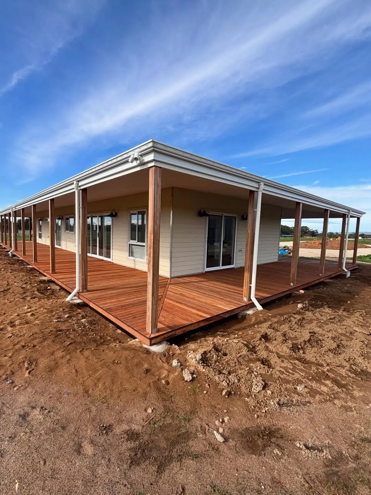
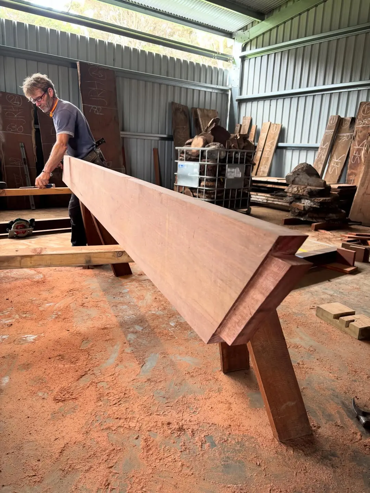

The wraparound deck
From roof framing and the wraparound pergola to lock-up and weatherboards, finished with 170 m² of Jarrah deck.

“Massive wrap around deck finished last week! 170 sq'm of rough saw green jarrah decking was epic to work with. Its great to tie this job up from framing up the roof and wrap around pergola, to lock up with doors/ windows and the james hardie's linear weather boards and to finish up with this huge deck!”
Daniel Weston, on Instagram
The story
This is what one carpenter on the whole job looks like. Daniel framed the roof and the wraparound pergola, took the house to lock-up with doors and windows, cladded it in linear weatherboards, and then finished with the deck.
170 square metres of rough-sawn green Jarrah runs right around the house, with diagonal mitre joints at every corner so the boards turn cleanly. It's the kind of verandah you live on, not just walk across.
- Species
- Timber
- 170 m² rough-sawn green Jarrah decking
- Scope
- Roof framing, wraparound pergola, doors and windows to lock-up, linear weatherboards, deck
- Where
- Margaret River region, WA
Part 1 of 1
The verandah
Your turn
Want something like this at your place?
Tell Daniel what you're picturing. It takes a minute, and he'll call you back to talk it through.
Keep reading